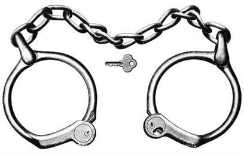
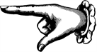

DEPENDANCE
(addiction)
"Toute dépendance commence par un acte de soumission." Josiane COEIJMANS

Toxique, alcool, jeu tabac, sex, sport, travail, nourriture, affectif... quelle dépendance vous menottte ? La dimension de dépendance aussi bien psychologique, comportementale que physiologique est protéiforme. En effet, il faut considérer les critères qui maintiennent la dépendance comme l'environnement, l'accession à l'objet de consommation et la personne dans sa singularité. Il est très souvent a considérer que ce n'est pas le produit, le comportement ou la consommation qui engendre la dépendance mais la raison de son usage. De fait, c’est la notion de perte de contrôle, et non celle de plaisir qui se trouve au centre de la dépendance à l’usage d’une substance.
Les sujets addicts présentent en effet des difficultés majeures dans les situations nécessitant des prises de décision, continuant par exemple à consommer la substance malgré leur connaissance des conséquences négatives qu’elle peut avoir, qu’elles soient sur le plan professionnel, affectif, familial, physique ou psychologique. La dépendance définit donc, en grande partie, comme une pathologie du choix et le dépendantt comme un sujet aux capacités de prise de décision biaisées.
La dépendance est donc une situation d'assujettissement d'un individu à la prise d'une drogue, l'interruption de cette dernière pratique entraînant un malaise psychique, voire physique, qui incline le sujet à pérenniser sa consommation. Mais la notion de dépendance recouvre en fait un champ bien plus étendu en englobant toutes les "toxicomanies sans drogue" et pour caractériser ces dernières, depuis quelques années, les spécialistes font plutôt appel à la notion d'addiction.
L'addiction est donc un autre terme pour désigner cette relation de dépendance plus ou moins aliénante pour l'individu à l'égard d'un produit (drogue, tabac, alcool, médicament), d'une pratique (jeu, sport, travail, sexe...), ou d'une situation (relation amoureuse). Ces deux termes ont donc tendance à être employés indifféremment pour désigner ce comportement qui conduit une personne à s'adonner à des pratiques qui le mènent à aliéner sa liberté d'être et de vivre.
Le terme addictus, signifiant "adonné à", était utilisé en Droit Romain pour désigner la situation d’un sujet débiteur incapable de payer ses dettes. Il se trouvait dès lors dévoué à son créancier qui avait le droit de disposer entièrement de sa personne, comme d’un esclave. La contrainte par le corps était évoquée. Le terme d'addiction pourrait sous-entendre l’absence d'indépendance, de liberté. L’addiction est un processus pathologique récurrent, comprenant un phénomène de consommation répétée d’intensité variable puis l’installation progressive de signes de manque et/ou d’accoutumance, d’une envie irrésistible de consommer (craving), d’une perte de contrôle, d’un déni et de la recherche de produit(s) et/ou de comportement(s) addictifs malgré les risques médicaux, psychologiques, psychiatriques et sociaux encourus et connus par la personne. Le caractère chronique de la maladie ainsi que l’évolution par rechutes sont caractéristiques de ce trouble. L’addiction peut se résumer par la perte de la liberté de s’abstenir.
Sur le plan psychologique, une symptomatologie commune, que ce soit un produit ou un comportement, comme l’impulsivité, les troubles cognitifs, est retrouvée. Sur le plan psychiatrique, les troubles de l’humeur comme la dépression, les troubles anxieux, les troubles du sommeil sont fréquemment présents. Les conséquences sociales sont principalement l’isolement, la perte d’emploi, l’échec scolaire, la séparation, les problèmes financiers, la stigmatisation...
Comment ça se passe dans le cerveau ?
Le cerveau fait sa puberté comme tous les organes de notre corps. Classiquement, cette puberté se fait jusqu’à l’âge de 20-25 ans selon les études d’imagerie cérébrale. Les récompenses naturelles, comme manger lorsque l’on a faim, boire lorsque l’on a soif, avoir des rapports sexuels lorsque l’on en a envie, sont à l’origine du plaisir. Le sentiment amoureux ou être passionné par un style musical fait également partie des récompenses naturelles ! Tout ce qui fait plaisir a tendance à être répété. C’est nécessaire pour la survie de l’espèce. Quatre circuits cérébraux s’activent lors des récompenses naturelles : le circuit archaïque de la récompense (j’ai faim, je mange !); le circuit de la mémoire et de l’apprentissage; le circuit de la motivation (composante ou processus réglant l’engagement d’une personne pour une activité précise) et le circuit du contrôle (répondre de manière adaptée à des situations sociales adaptées ou inadaptées, la situation extrême étant l’impulsivité). Dans les addictions, les circuits sont désynchronisés c’est-à-dire que les circuits de récompense et de mémoire-apprentissage vont fonctionner de leurs côtés, le circuit de la motivation et celui du contrôle vont fonctionner isolément, chacun de leur côté. Donc dans la traduction clinique de cette désynchronisation de la circuiterie cérébrale est que l’addiction est la recherche enregistrée et apprise de la récompense immédiate avec une perte de motivation et de contrôle.
Les sujets addicts présentent en effet des difficultés majeures dans les situations nécessitant des prises de décision, continuant par exemple à consommer la substance malgré leur connaissance des conséquences négatives qu’elle peut avoir, qu’elles soient sur le plan professionnel, affectif, familial, physique ou psychologique. La dépendance définit donc, en grande partie, comme une pathologie du choix et le dépendantt comme un sujet aux capacités de prise de décision biaisées.
La dépendance est donc une situation d'assujettissement d'un individu à la prise d'une drogue, l'interruption de cette dernière pratique entraînant un malaise psychique, voire physique, qui incline le sujet à pérenniser sa consommation. Mais la notion de dépendance recouvre en fait un champ bien plus étendu en englobant toutes les "toxicomanies sans drogue" et pour caractériser ces dernières, depuis quelques années, les spécialistes font plutôt appel à la notion d'addiction.
L'addiction est donc un autre terme pour désigner cette relation de dépendance plus ou moins aliénante pour l'individu à l'égard d'un produit (drogue, tabac, alcool, médicament), d'une pratique (jeu, sport, travail, sexe...), ou d'une situation (relation amoureuse). Ces deux termes ont donc tendance à être employés indifféremment pour désigner ce comportement qui conduit une personne à s'adonner à des pratiques qui le mènent à aliéner sa liberté d'être et de vivre.
Le terme addictus, signifiant "adonné à", était utilisé en Droit Romain pour désigner la situation d’un sujet débiteur incapable de payer ses dettes. Il se trouvait dès lors dévoué à son créancier qui avait le droit de disposer entièrement de sa personne, comme d’un esclave. La contrainte par le corps était évoquée. Le terme d'addiction pourrait sous-entendre l’absence d'indépendance, de liberté. L’addiction est un processus pathologique récurrent, comprenant un phénomène de consommation répétée d’intensité variable puis l’installation progressive de signes de manque et/ou d’accoutumance, d’une envie irrésistible de consommer (craving), d’une perte de contrôle, d’un déni et de la recherche de produit(s) et/ou de comportement(s) addictifs malgré les risques médicaux, psychologiques, psychiatriques et sociaux encourus et connus par la personne. Le caractère chronique de la maladie ainsi que l’évolution par rechutes sont caractéristiques de ce trouble. L’addiction peut se résumer par la perte de la liberté de s’abstenir.
Sur le plan psychologique, une symptomatologie commune, que ce soit un produit ou un comportement, comme l’impulsivité, les troubles cognitifs, est retrouvée. Sur le plan psychiatrique, les troubles de l’humeur comme la dépression, les troubles anxieux, les troubles du sommeil sont fréquemment présents. Les conséquences sociales sont principalement l’isolement, la perte d’emploi, l’échec scolaire, la séparation, les problèmes financiers, la stigmatisation...
Comment ça se passe dans le cerveau ?
Le cerveau fait sa puberté comme tous les organes de notre corps. Classiquement, cette puberté se fait jusqu’à l’âge de 20-25 ans selon les études d’imagerie cérébrale. Les récompenses naturelles, comme manger lorsque l’on a faim, boire lorsque l’on a soif, avoir des rapports sexuels lorsque l’on en a envie, sont à l’origine du plaisir. Le sentiment amoureux ou être passionné par un style musical fait également partie des récompenses naturelles ! Tout ce qui fait plaisir a tendance à être répété. C’est nécessaire pour la survie de l’espèce. Quatre circuits cérébraux s’activent lors des récompenses naturelles : le circuit archaïque de la récompense (j’ai faim, je mange !); le circuit de la mémoire et de l’apprentissage; le circuit de la motivation (composante ou processus réglant l’engagement d’une personne pour une activité précise) et le circuit du contrôle (répondre de manière adaptée à des situations sociales adaptées ou inadaptées, la situation extrême étant l’impulsivité). Dans les addictions, les circuits sont désynchronisés c’est-à-dire que les circuits de récompense et de mémoire-apprentissage vont fonctionner de leurs côtés, le circuit de la motivation et celui du contrôle vont fonctionner isolément, chacun de leur côté. Donc dans la traduction clinique de cette désynchronisation de la circuiterie cérébrale est que l’addiction est la recherche enregistrée et apprise de la récompense immédiate avec une perte de motivation et de contrôle.
Nous avons tous et toutes une échelle du plaisir. Cette échelle s’équilibre au cours de la journée. Nous essayons de l’équilibrer en permanence ! Si nous partons du pôle négatif : Elle va de la dysphorie (perturbation de l’humeur marquée par un sentiment déplaisant d’inconfort mental ou émotionnel), à l’anhédonie (incapacité à éprouver des émotions positives lors de situations de vie considérées comme plaisantes), à l’ennui, à l’impression de se sentir négatif. Une fois l’état d’équilibre passé, il y a différents stades pour atteindre l’extrémité du pôle positif qui est l’euphorie : se sentir bien, être intéressé, avoir du plaisir. Quand la personne souffre d’addiction, il existe un déséquilibre permanent de cette échelle de plaisir. Lorsqu’elle se sent mal, elle va consommer mais ne va pas réussir à rééquilibrer les choses. Lorsqu’elle se sent bien, c’est pareil ! L’addiction est un déséquilibre permanent de l’échelle du plaisir.
Les facteurs de risque d’être addict sont multiples. La complexité du phénomène provient d’interactions de différents éléments. Ce n’est pas simplement une personne qui rencontre un produit ou un comportement potentiellement addictogène dans un environnement donné ! L’équation est : développement – neurobiologie – cerveau – génétique - environnement – comportements et psychologie Les facteurs développementaux sont au centre de cette problématique. Il s’agit du développement personnel, des différences de sexe, de la maturité du cerveau. Sur le plan neurobiologique, entrent en jeu dans la vulnérabilité aux addictions des altérations des systèmes de neurotransmetteurs comme la dopamine, la sérotonine, la noradrénaline, le glutamate, des systèmes opioïde, GABA, cannabinoïde. Le stress, avec des variations interindividuelles de sensibilité à celui-ci, dont les perturbations de son axe biologique, jouent également un rôle. Au niveau cérébral, l’addiction entraine des modifications des circuits, du métabolisme et des phénomènes de neuroadaptation. Les facteurs génétiques expliqueraient de 40 à 60% le trouble addictif.
Les facteurs environnementaux jouent également un rôle crucial dans l’installation de l’addiction. Il s’agit du stress environnemental, de la disponibilité de la substance ou du comportement sans substance, de l’éducation, du fonctionnement familial, du groupe d’ami-e-s, de la perte de repères sociaux. Les traits de personnalité, le tempérament, la présence de troubles psychologiques doivent être pris en compte.
Il faut également tenir en importance la faible estime de soi, l’autodépréciation, des réactions émotionnelles variables, de difficultés à réagir face à des événements, à avoir des relations sociales stables et à résoudre des problèmes personnels. Sur le plan du tempérament, il s’agit de la recherche de sensations, la recherche de nouveautés, un faible évitement du danger et de niveau de sociabilité. L’anxiété, les troubles du sommeil, les troubles dépressifs, les troubles du comportement précoces, un trouble des conduites, un trouble hyperactif avec déficit de l’attention, sont fortement liés à l’installation d’une conduite addictive. La survenue précoce de troubles psychiatriques pourrait également doubler le risque de développer un trouble addictif. Tous ces facteurs cités doivent être présents en partie pour qu’il y ait installation d’une conduite addictive.
L’addiction est donc une maladie complexe et comprend des modalités spécifiqes. La première d’entre elles est l’usage précoce d’une substance. Plus une consommation démarre tôt dans la vie, plus le risque de consommation excessive et/ou d’installation d’une addiction est élevé surtout si l’usage se répète.
Egalement, lorsque la consommation est à visée auto thérapeutique et qu'elle devienti régulière et solitaire, il s’agit d’un indicateur à risque.
Aussi, le cumul des consommations aggrave les risques d’intoxication, psychologique et social, quelque soient les substances. La recherche d’excès est une modalité d’usage à risque avec ce désir d’anesthésie, cette envie de défonce. Enfin, la répétition des modalités de consommation est le point de départ de quelque chose de problématique.
Ma formation supérieure dans les addictions et en psychopathologie clinique solidifiée entre autre par une expérience de 8 ans dans un établissement psychiatrique spécialisé dans les addictions et actuellement dans un service hospitalier d'addictologie me permettent de pouvoir vous accompagner efficacement. Depuis 2015, j'ai fais le choix de la communication Ericksonienne afin de vaincre les dépendances. Car autre que rapide, cette approche est non intrusive dans le parcours de vie du sujet en ne cherchant pas de réponse mais des solutions.
Les facteurs de risque d’être addict sont multiples. La complexité du phénomène provient d’interactions de différents éléments. Ce n’est pas simplement une personne qui rencontre un produit ou un comportement potentiellement addictogène dans un environnement donné ! L’équation est : développement – neurobiologie – cerveau – génétique - environnement – comportements et psychologie Les facteurs développementaux sont au centre de cette problématique. Il s’agit du développement personnel, des différences de sexe, de la maturité du cerveau. Sur le plan neurobiologique, entrent en jeu dans la vulnérabilité aux addictions des altérations des systèmes de neurotransmetteurs comme la dopamine, la sérotonine, la noradrénaline, le glutamate, des systèmes opioïde, GABA, cannabinoïde. Le stress, avec des variations interindividuelles de sensibilité à celui-ci, dont les perturbations de son axe biologique, jouent également un rôle. Au niveau cérébral, l’addiction entraine des modifications des circuits, du métabolisme et des phénomènes de neuroadaptation. Les facteurs génétiques expliqueraient de 40 à 60% le trouble addictif.
Les facteurs environnementaux jouent également un rôle crucial dans l’installation de l’addiction. Il s’agit du stress environnemental, de la disponibilité de la substance ou du comportement sans substance, de l’éducation, du fonctionnement familial, du groupe d’ami-e-s, de la perte de repères sociaux. Les traits de personnalité, le tempérament, la présence de troubles psychologiques doivent être pris en compte.
Il faut également tenir en importance la faible estime de soi, l’autodépréciation, des réactions émotionnelles variables, de difficultés à réagir face à des événements, à avoir des relations sociales stables et à résoudre des problèmes personnels. Sur le plan du tempérament, il s’agit de la recherche de sensations, la recherche de nouveautés, un faible évitement du danger et de niveau de sociabilité. L’anxiété, les troubles du sommeil, les troubles dépressifs, les troubles du comportement précoces, un trouble des conduites, un trouble hyperactif avec déficit de l’attention, sont fortement liés à l’installation d’une conduite addictive. La survenue précoce de troubles psychiatriques pourrait également doubler le risque de développer un trouble addictif. Tous ces facteurs cités doivent être présents en partie pour qu’il y ait installation d’une conduite addictive.
L’addiction est donc une maladie complexe et comprend des modalités spécifiqes. La première d’entre elles est l’usage précoce d’une substance. Plus une consommation démarre tôt dans la vie, plus le risque de consommation excessive et/ou d’installation d’une addiction est élevé surtout si l’usage se répète.
Egalement, lorsque la consommation est à visée auto thérapeutique et qu'elle devienti régulière et solitaire, il s’agit d’un indicateur à risque.
Aussi, le cumul des consommations aggrave les risques d’intoxication, psychologique et social, quelque soient les substances. La recherche d’excès est une modalité d’usage à risque avec ce désir d’anesthésie, cette envie de défonce. Enfin, la répétition des modalités de consommation est le point de départ de quelque chose de problématique.
Ma formation supérieure dans les addictions et en psychopathologie clinique solidifiée entre autre par une expérience de 8 ans dans un établissement psychiatrique spécialisé dans les addictions et actuellement dans un service hospitalier d'addictologie me permettent de pouvoir vous accompagner efficacement. Depuis 2015, j'ai fais le choix de la communication Ericksonienne afin de vaincre les dépendances. Car autre que rapide, cette approche est non intrusive dans le parcours de vie du sujet en ne cherchant pas de réponse mais des solutions.

CRITERES DIAGNOSTIQUES DE DEPENDANCE
EN RELATION

TOXIC Ô MANIE
TABAC
ALCOOL
ANXIETE
EMOTION